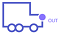
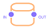

Elements of the model and their relationships
|  |  | ||
 |
|||
Click on an element to have a look at its description !
Part Supplier
Represents a supplier that supply a storage.
| Parameters | |
|---|---|
| name | The name of the supplier |
| Supplier Delay | Probability distribution used to generate a random variable in order to determinate a delay for the supplier |
| Delivered percentage | The delivered percentage of a placed order |
Storage
It represents storages or a stock as you name it. When this stock is full, all process that try to output new parts into it are blocked, until sufficient space is made free.
| Parameters | |
|---|---|
| name | The name of the storage |
| Size | The maximal content of the stock. Attempting to put more items will lead block the input processes |
| Initial Content | The initial content of the stock |
| overflow | A boolean. False for "classic" storages. |
Overflow Storage
It represents storages or a stock as you name it. This storage overflows when it is too much filled in.
| Parameters | |
|---|---|
| name | The name of the storage |
| Size | The maximal content of the stock. Attempting to put more items will lead to an overflow, with loss of stock content |
| Initial Content | The initial content of the stock |
| overflow | A boolean. True for "overflow" storages. |
Single Batch Process
A batch process inputs some parts from a specified set of inputs, runs and outputs some parts to a set of specified output
| Parameters | |
|---|---|
| name | The name of the process |
| Batch Duration | Probability distribution used to generate a random variable in order to determinate the duration of the batch process. This duration starts from all inputs being inputted and ends with the beginning of the outputting. |
| Percentage of success | The percentage of success of a performed batch. Equals to 100 if the process is not a "failing" process |
| Number of lines | The number of simultaneous processes. Equals to 1 for "single" batch processes |
Batch Process
This is an abstraction for a set of Single Batch Processes running in parallel. This supports one more parameter that is the number of such batches.
| Parameters | |
|---|---|
| name | The name of the process |
| Batch Duration | Probability distribution used to generate a random variable in order to determinate the duration of the batch process. This duration starts from all inputs being inputted and ends with the beginning of the outputting. |
| Percentage of success | The percentage of success of a performed batch. Equals to 100 if the process is not a "failing" process |
| Number of lines | The number of simultaneous processes. Greater than 1 for "non single" batch processes |
Failing Single Batch Process
The failing single batch process might fail. In this case, failure is assessed at the end of the batch duration, and produces so-called failure outputs (which can be trash items, or lower-quality parts for other specific usages.
| Parameters | |
|---|---|
| name | The name of the process |
| Batch Duration | Probability distribution used to generate a random variable in order to determinate the duration of the batch process. This duration starts from all inputs being inputted and ends with the beginning of the outputting. |
| Percentage of success | The percentage of success of a performed batch. Lower than 100 if the process is a "failing" process |
| Number of lines | The number of simultaneous processes. Equals to 1 for "single" batch processes |
Failing Batch Process
A part of the set of single batch processes might fail. In this case, failure is assessed at the end of the batch duration, and produces so-called failure outputs (which can be trash items, or lower-quality parts for other specific usages
| Parameters | |
|---|---|
| name | The name of the process |
| Batch Duration | Probability distribution used to generate a random variable in order to determinate the duration of the batch process. This duration starts from all inputs being inputted and ends with the beginning of the outputting. |
| Percentage of success | The percentage of success of a performed batch. Lower than 100 if the process is a "failing" process |
| Number of lines | The number of simultaneous processes. Greater than 1 for "non single" batch processes |
Conveyor Belt Process
This is a process that runs on a conveyer belt. If the output is blocked, no new batch is started, and if the input is blocked, the output still proceeds.
| Parameters | |
|---|---|
| name | The name of the process |
| Process Duration | Probability distribution used to generate a random variable in order to determinate the duration of the process. This duration starts from all inputs being inputted and ends with the beginning of the outputting. |
| Minimal separation between batches | The minimal separation between two consecutive batches |
Output Port
A small square that represents an output of a process. Conveyor belts can only have one port (which has to be a "success" port) and batch process can have several ports. However, only "success" ports will be used on non-failing batch processes.
| Parameters | |
|---|---|
| type | The type of the output ("success", "failure", "lower quality" or "trash") |
| Description | Any text you wish to type |
Supplier -> Storage Link (Order on Stock Threshold)
Represents the flow of goods delivered by a supplier to a storage .
| Parameters | |
|---|---|
| name | The name of the relation |
| Order type | The type of order made to the supplier. There are 2 types of order : "fixed" (always the same amount of goods defined by the "order quantity" parameter) and "refill" (the storage is refilled by the system every time an order is executed). |
| Order Quantity | The quantity of goods delivered by the supplier. Only necessary for "fixed" order types |
| Threshold | The order is placed when the stock gets below this threshold |
| Period | The period of time after which the stock is checked by the system. If the period is greater than 0, the refill policy is called "Order on Stock Threshold With Tick". Otherwise, there are no checks made by the system |
Storage -> Batch Process / Conveyor Belt Link (Storage Output Flow)
Represents the flow of goods sent by a storage to a process.
| Parameters | |
|---|---|
| Quantity | Probability distribution used to generate a random variable in order to determinate the quantity of goods sent from the storage to the process |
Process / Conveyor Belt output port -> Storage Link (Process Output Flow)

Represents the flow of outputs sent by a process to a storage.
| Parameters | |
|---|---|
| Quantity | Probability distribution used to generate a random variable in order to determinate the quantity of goods sent from the storage to the process |
| Delay | Probability distribution used to generate a random variable in order to determinate the possible delay in the transfer of goods to the storage |